After you activated the theme, you will get notification says about what plugins you need install.
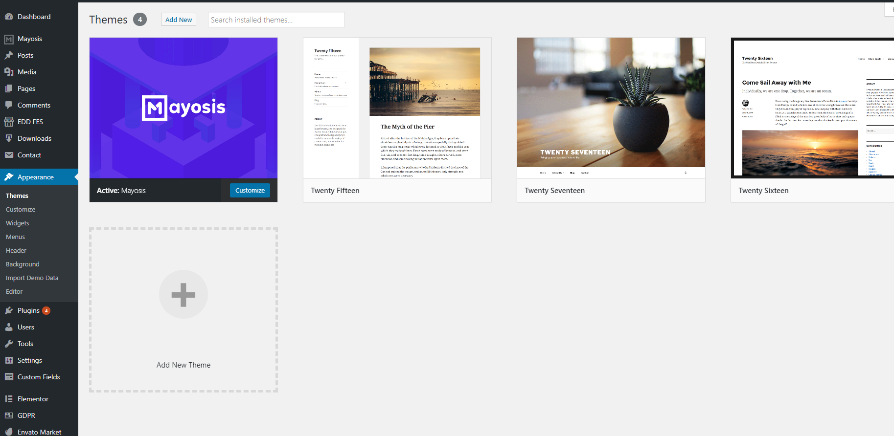 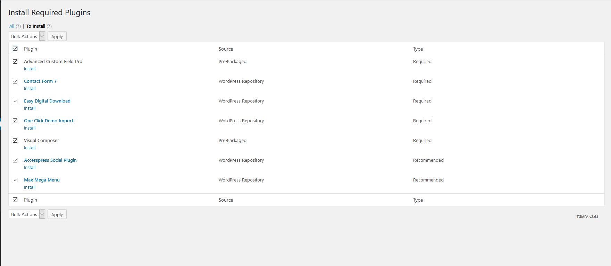If you want to sell your items such as templates, arts, tutorials, music, ebooks, stock photography, stock footage, themes, plugins, code snippets, Softwares or digital services then mayosis is for you. Built on WordPress and free Easy Digital Downloads. mayosis – Digital Marketplace Theme allows you to create your own marketplace such as Amazon, eBay, Etsy, Themeforest or CreativeMarket and it takes only a few hours to set up your website and sell goods. The theme is heavily customized and organized for selling a different kind of digital products as we mentioned above. Integrated Page Builder plugin allows you to create your web pages quickly & visually without knowing a single piece of code. Not only that, but also you can create a marketplace for others where people are selling their products by your marketplace and mayosis allows that with an additional EDD (Easy Digital Downloads) extension called FES (Front End Submission). There are other popular extensions supported by mayosis such as EDD Commission. Please check out more about mayosis – Digital Marketplace below!
Please go to http:// wordpress.org and download the current version of WordPress. For information on how to install a WordPress Platform, please see the WordPress codex page http://codex.wordpress.org/ Installing_WordPress.
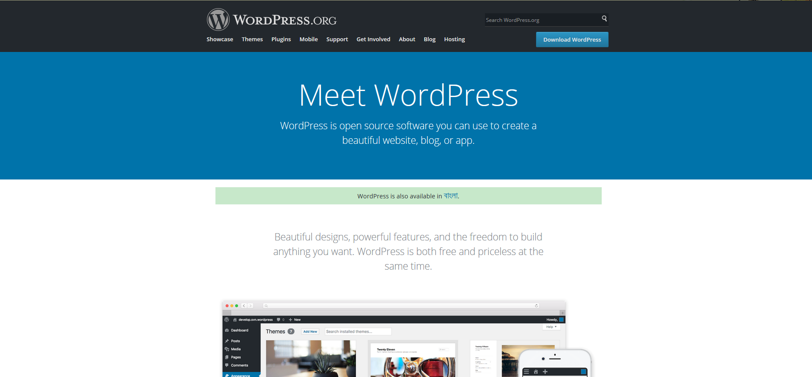
When you are ready to install a theme, you must first upload the theme to your WordPress directory. There are two ways you can install the theme:
• Using FTP: By using any FTP program of your choice you can upload the non- zipped folder to the /wp-content/themes/ folder on your server.
• Using WordPress: Navigate to Appearance > Themes > Install Themes. Go to upload and select the zipped theme folder and hit install now and theme will be uploaded and installed. Once you have uploaded the theme, you need to active it. To activate your new theme, go to Appearance > Themes and activate your chosen them
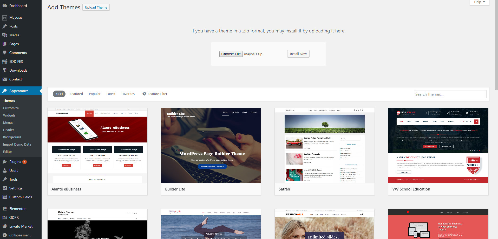 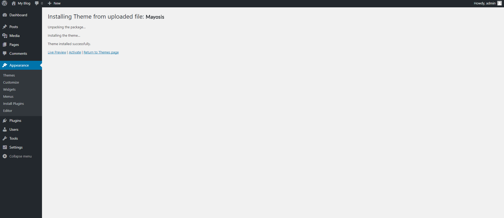
After you activated the theme, you will get notification says about what plugins you need install.
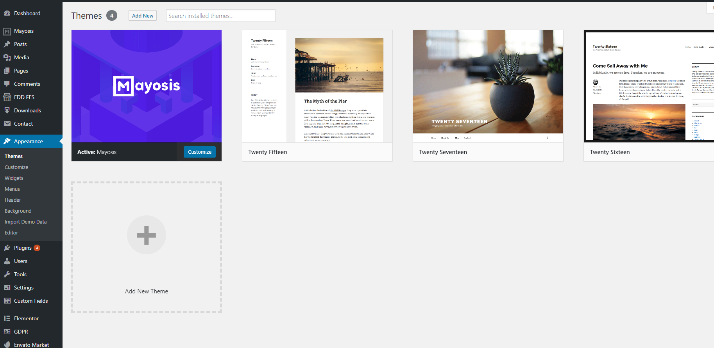 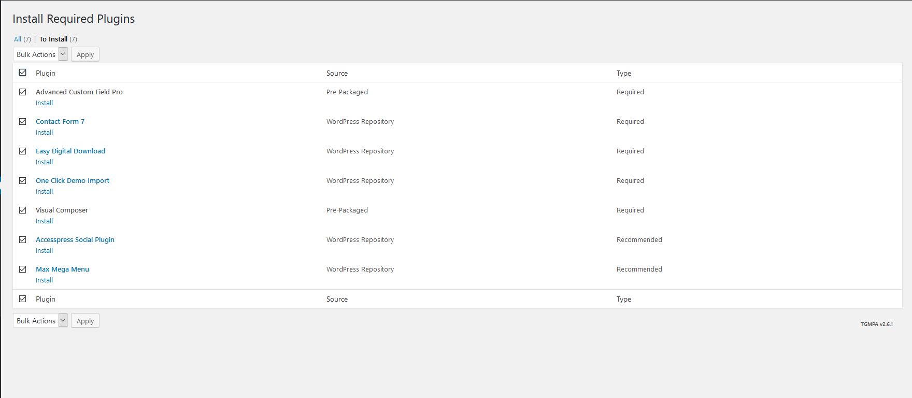Click on the “Begin installing plugins” link to begin the installation. Once you install the plugins, please return to the plugins list, and activate it. That’s it, you should be good to go.
Import the dummy data for quick start using the theme.
You can Setup Dummy by one click. Follow Instruction.
After setup Required All Plugins. Go to Appearance > Import Demo Data & Just Click to Your Demo Import button & Wait Few times. Magic Start
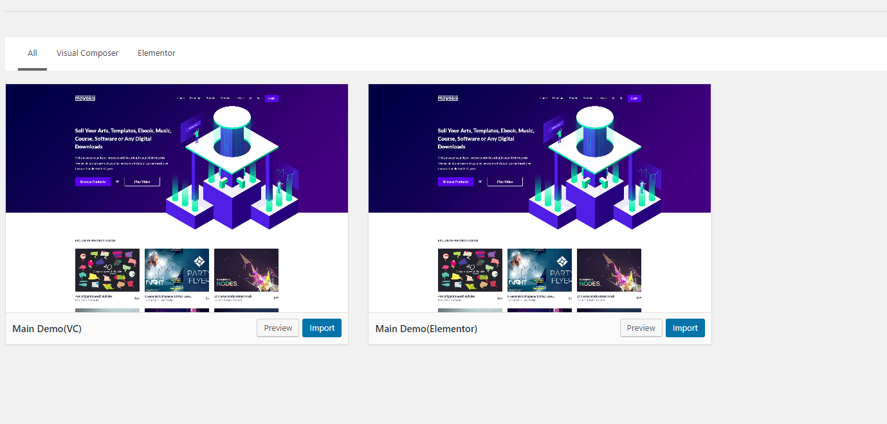
Our Theme Option Build in wordpress customizer. Our Theme Panel Options is too much easy. There have Following Menus:
Styles
Header
Product options
Footer
Typography
Templates
In Style There are all color Option of the whole site. You can control Easily the global Style. We tried to make it simple & fantastic. Check Screenshots:
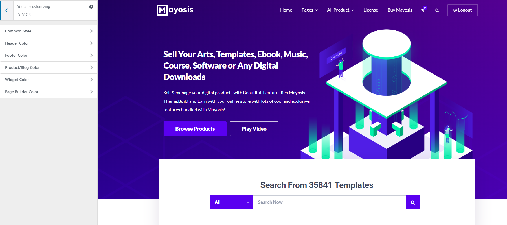
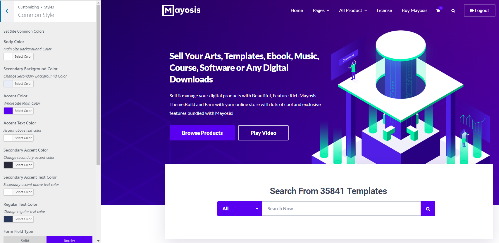
Mayosis Header Option is a Magic, there are lots of option you manage everything about header of you site from this menu.
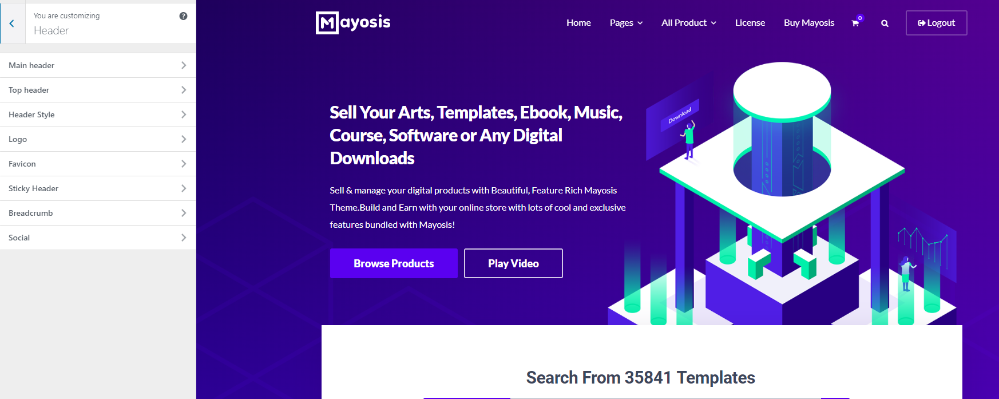
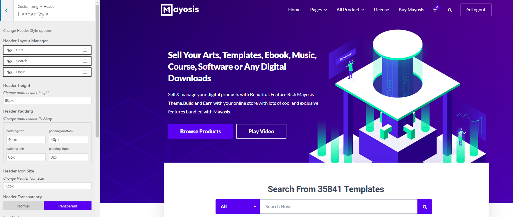
Control product Style Via this option
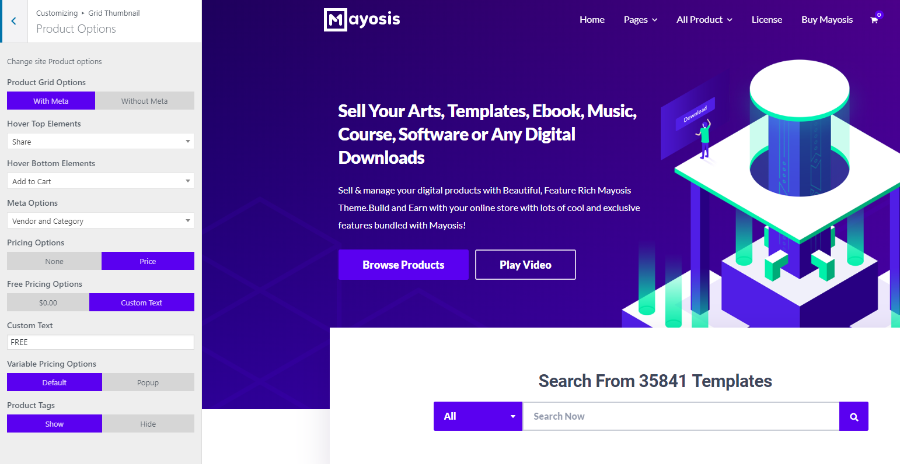
We Have Amazing Footer column settings in footer option. You can choose 1-6 columns & can set columns Size in %.
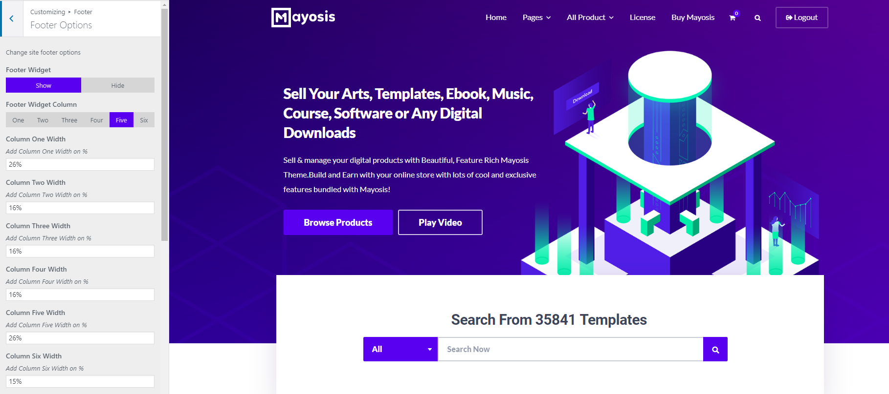
We Have Good typography system. Easily can chnage typography From this option.
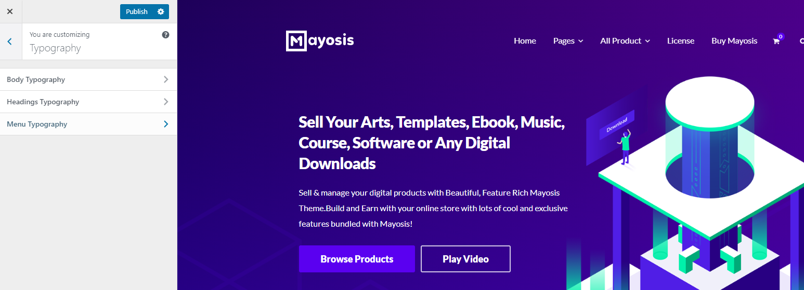
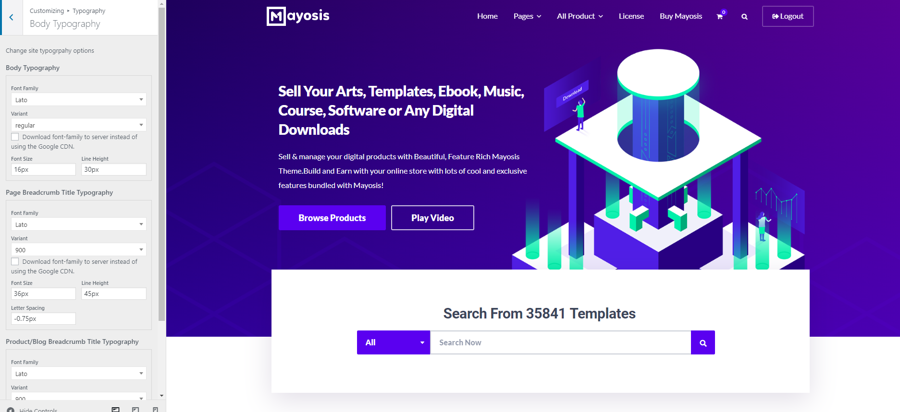
This is an amazing section. You can control product & blog post header template design from here.
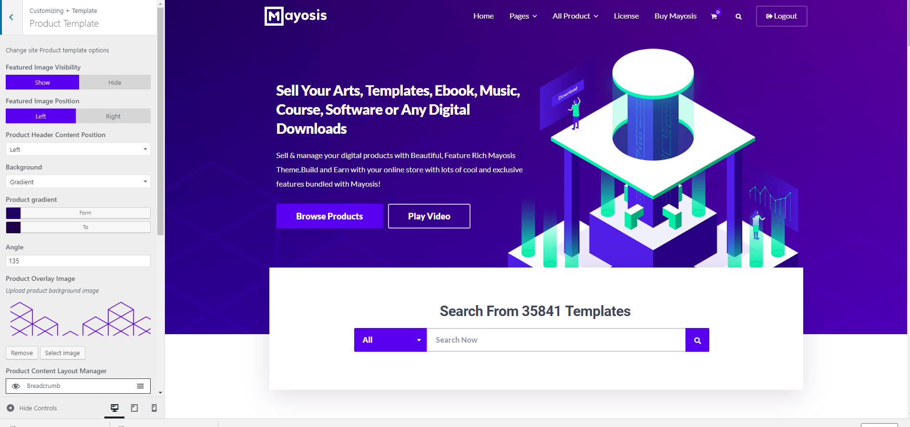
You can find easiest Options in every section. Start Customize colors, fonts, header style etc
Stay Update we will add more options on next update.
Go to Appearance > Widgets, you can manage all the widgets including the home page.We have 17 Custom Widgets. Use as you wish.
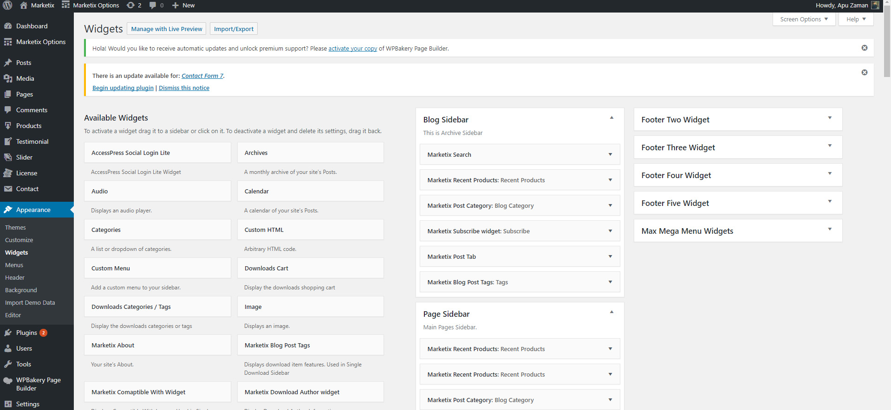Create Pages As you need. You can on/off pages Sidebar. We are Providing Full width Page template for Full width pages. Also 19 Page Builder custom elements to make your page Attractive.
We also Providing Author list page template for Blog. You should know We have full place blog Engine.
Also We have a Sitemap Page template it will help you to make Sitemap Page.
Note this are simply the posts to display your Products. To learn more on how to set up your Products, please visit http://easydigitaldownloads.com/.
The downloads are the meat and potatoes of this theme, and likely of your website. To add a new product post, go to Downloads -> Add New. On this page, put in your download title in the title box and then a description into the main editor. Below this, you can input your product info, which again, is documented at http://easydigitaldownloads.com/.
You’re now going to want to upload images. You should have at least one image to act as the Featured Image. Click the Upload/Insert Media button located above the top left of the editor. Upload as many images as you want, and make sure to set one as the featured image. No need to actually insert any images into the post though, a lightbox gallery on single product pages is inserted automatically when you upload more than one image to a product post. So upload images into a product post as you normally would, and the gallery will automatically be built. Be sure that you have one of them set as your featured image though!
Go ahead and hit the blue publish button in the top right and BLAM! Your product is posted and for sale. Repeat this step for all of your downloads.
Add Post & Start blogging. Add Category & upload post Category Wise .Its SImple. All Post Options you will find in theme Options.
Upload Author Data from Users Menu of Dashboard. We have Good Author options. You can add social Profile,Upload image, & Biography.
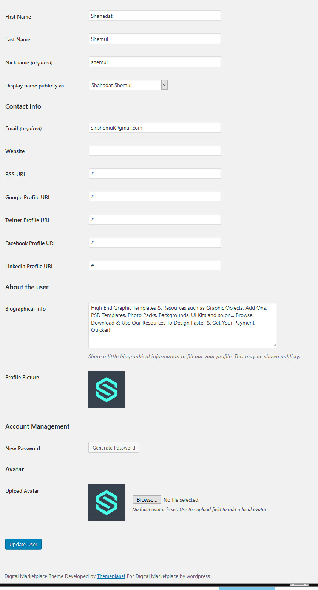Also You can do This By Settings> Reading & Same Process
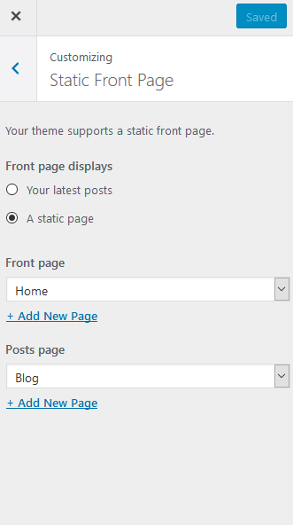 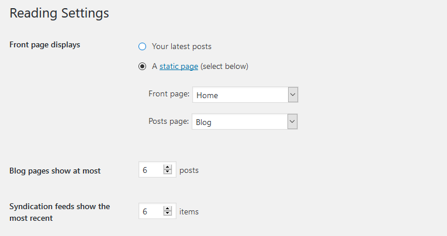When you download the theme package from ThemeForest you will see a directory named “Child Theme”. Inside of this directory is “digital-marketplace-child.zip”. Simply upload the .zip file like a standard WordPress theme.
Once the theme has been uploaded, simply activate it. The child theme will include a blank style.css and functions.php
You can Customize as you need
Our Theme Based on Digital Products. You Can use Easy Digital Download as Products. Note this are simply the posts to display your Products. To learn more on how to set up your Products, please visit http://easydigitaldownloads.com/.